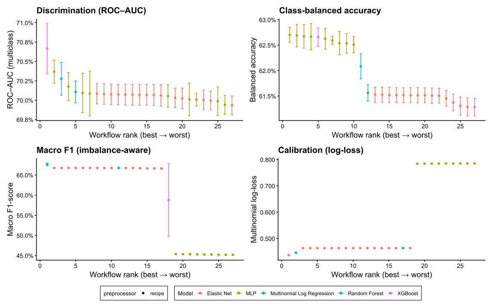
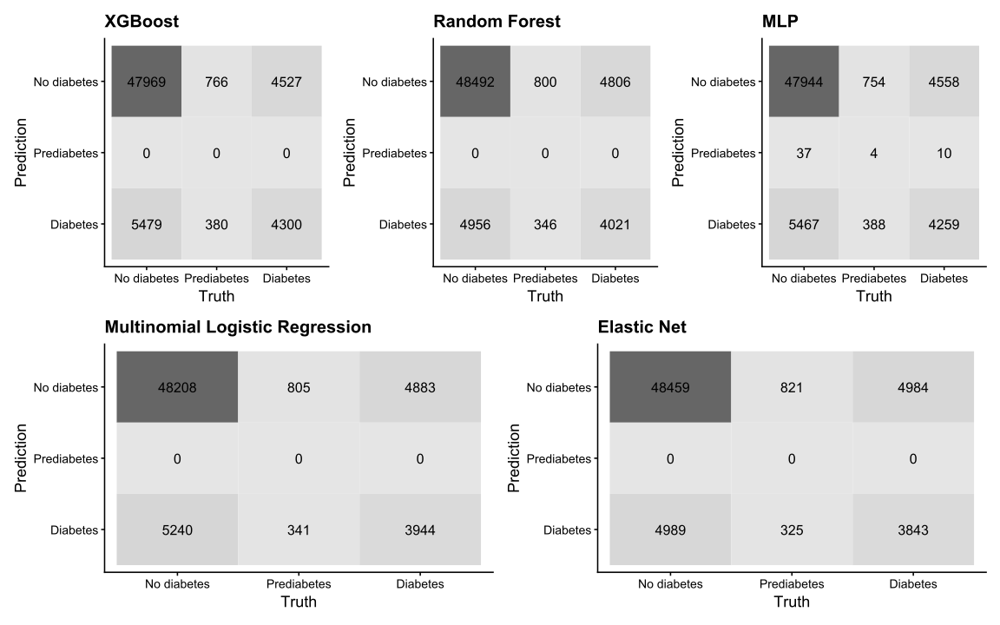
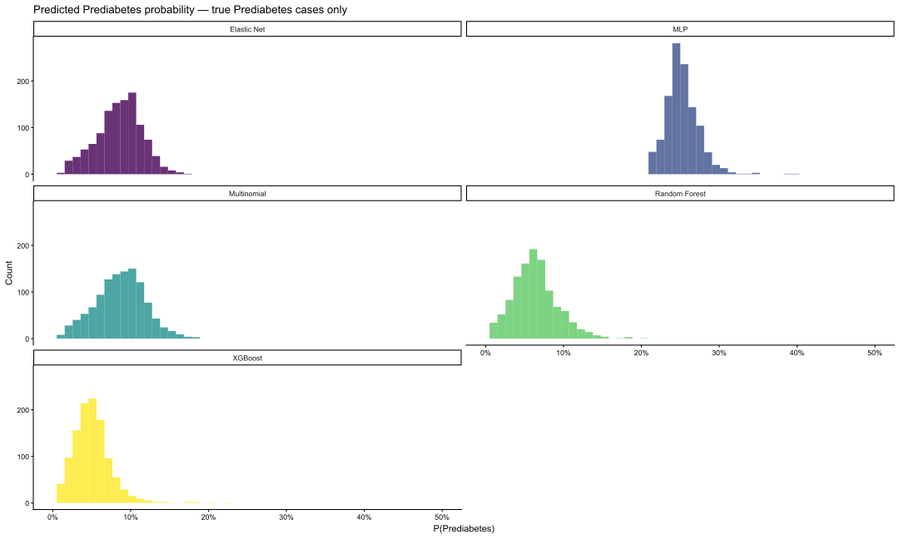
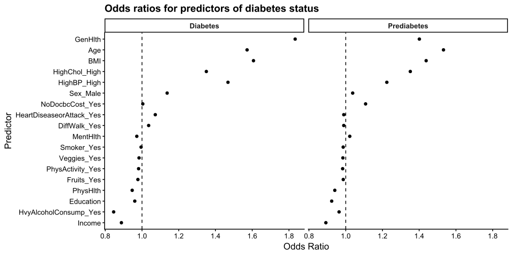
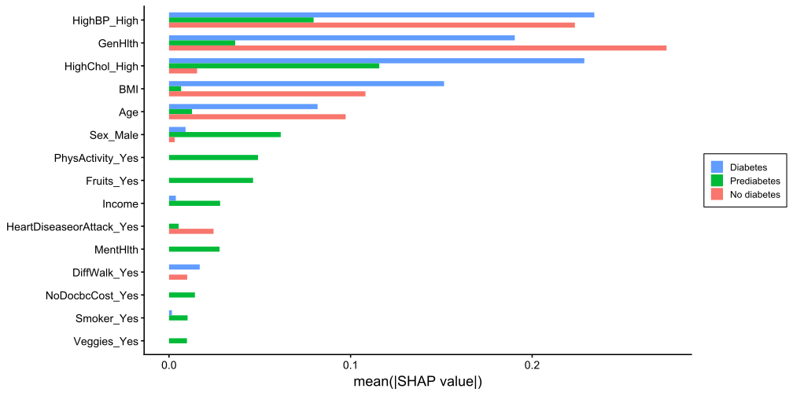
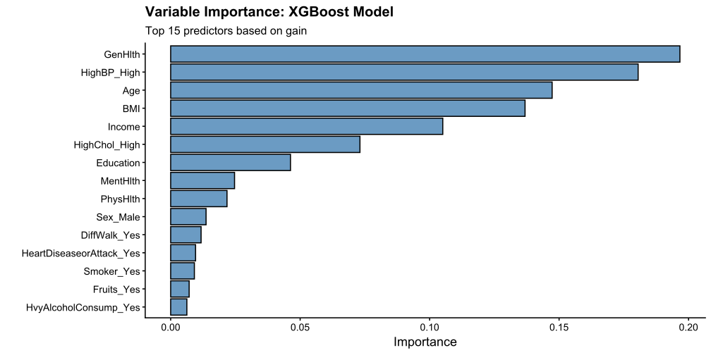

class_counts <- diab |>
count(Diabetes) |>
mutate(weight = 1 / sqrt(n / sum(n)))
diab <- diab |>
left_join(class_counts |> select(Diabetes, weight), by = "Diabetes") |>
mutate(weight = importance_weights(weight)) 6. Multidomain Determinants and Prediction of Diabetes Status
6.1 Modelling Objective
This section addresses the following research question:
To what extent can diabetes status be explained and predicted using demographic, socioeconomic, behavioural, and cardiometabolic factors, and which predictors contribute most strongly to distinguishing between no diabetes, prediabetes, and diabetes?
The objective is twofold:
Explanatory – to estimate the adjusted associations between predictor domains and diabetes status.
Predictive – to compare the classification performance of statistical and machine learning models.
Diabetes status is treated as a multiclass outcome (No diabetes / Prediabetes / Diabetes), requiring modelling approaches suitable for nominal categorical outcomes.
6.2. Outcome Variable
The dependent variable is diabetes status, categorised into:
No diabetes
Prediabetes
Diabetes.
Exploratory analysis demonstrated class imbalance, with the majority of respondents in the no-diabetes category and substantially smaller proportions in the prediabetes and diabetes groups. This imbalance is accounted for in model training and evaluation.
6.3 Training and Validation
6.3.1 Data Partitioning and Resampling:
The dataset is partitioned into a 75% training set and a 25% testing set using stratified sampling on diabetes status, ensuring class proportions are preserved across both splits. The raw training set reflects the population-level imbalance of 84.2% No diabetes, 13.9% Diabetes, and 1.8% Prediabetes, a distribution too skewed for stable multiclass learning without intervention.
Prior to cross-validation, a hybrid resampling strategy is applied directly to the training set. No diabetes is downsampled to 68,949 real observations, Diabetes is retained in full (26,519 cases) as the anchor class, and Prediabetes is modestly augmented via SMOTE (over_ratio = 0.1), doubling real cases from 3,485 to 6,894 with approximately 50% synthetic observations. The resulting distribution of 67/26/7 approximates the 65/25/10 target while remaining grounded in observed data. Downsampling uses only real observations to preserve majority-class signal integrity, Diabetes is kept in full to avoid discarding clinically important cases, and SMOTE is limited to a doubling ratio to prevent the model learning predominantly from synthetic profiles. No diabetes intentionally remains the dominant class, reflecting real-world prevalence, while the two minority classes receive sufficient representation for stable parameter estimation.
Five-fold stratified cross-validation is applied to the resampled training set, maintaining class proportions within each fold, and the held-out test set remains untouched throughout development for final evaluation only.
set.seed(42)
diabetes_split <- initial_split(
diab,
prop = 0.75,
strata = Diabetes
)
diab_train <- training(diabetes_split)
diab_test <- testing(diabetes_split)
# Sanity checks
diab_train |> count(Diabetes) |> mutate(prop = n/sum(n))| Diabetes | n | prop |
|---|---|---|
| No diabetes | 160255 | 0.8422992 |
| Prediabetes | 3485 | 0.0183171 |
| Diabetes | 26519 | 0.1393837 |
diab_test |> count(Diabetes) |> mutate(prop = n/sum(n))| Diabetes | n | prop |
|---|---|---|
| No diabetes | 53448 | 0.8427492 |
| Prediabetes | 1146 | 0.0180697 |
| Diabetes | 8827 | 0.1391810 |
set.seed(42)
diabetes_folds <- vfold_cv(
diab_train,
v = 5,
strata = Diabetes
)6.3.2 Recipe Definition and Preprocessing Strategy
The preprocessing recipe is defined using the tidymodels recipes framework and applied consistently across all candidate models. The following steps are applied in sequence:
Outcome specification — Models
Diabetesas a three-level categorical outcome (No diabetes, Prediabetes, Diabetes).Near-zero variance removal — Removes predictors with minimal variability across observations to prevent numerical instability and eliminate redundant features that contribute no discriminative information.
Ordinal scoring — Converts ordered factors (
Age,Education,Income,GenHlth) into integer scores preserving their natural ranking. This introduces an assumption of approximately equal spacing between adjacent categories; however, the primary objective is to retain monotonic structure in a computationally efficient representation compatible with both parametric and tree-based models.Dummy encoding — Transforms remaining nominal predictors into binary indicator variables. This step is necessary for models that cannot natively handle categorical inputs.
Global normalisation — Standardises all numeric predictors to mean = 0, sd = 1. Unlike the previous specification which normalised only BMI, MentHlth, and PhysHlth, normalisation is applied globally here to accommodate the full candidate model set. SVM and MLP are sensitive to feature scale and require all inputs to be on a comparable range; tree-based models are scale-invariant but are unaffected by this step.
SMOTE augmentation — Applied within the recipe with
over_ratio = 0.1, operating on the already-downsampled training data. At this ratio, SMOTE generates synthetic Prediabetes cases by interpolating between existing minority-class nearest neighbours until the class reaches approximately 10% of the majority class count. Because downsampling has already reduced the No diabetes footprint prior to this step, synthetic generation occurs in a feature space with a more balanced neighbourhood structure, reducing the risk of interpolating across majority-class regions.Case weights — Inverse square root frequency weights are assigned to each observation based on class membership and incorporated into the recipe via . Weights of approximately 1.09, 2.68, and 7.39 are assigned to No diabetes, Diabetes, and Prediabetes respectively, upweighting minority class observations during parameter estimation without generating additional synthetic data. This complements the resampling strategy by penalising misclassification of rare classes during training, particularly Prediabetes.
set.seed(42)
rec_rq1 <- recipe(Diabetes ~ ., data = diab_train) |>
step_nzv(all_predictors()) |>
step_ordinalscore(Age, Education, Income, GenHlth) |>
step_dummy(all_nominal_predictors()) |>
step_normalize(all_numeric_predictors()) |>
step_downsample(Diabetes, under_ratio = 20 , seed = 42) |>
step_smote(Diabetes, over_ratio = 0.1, seed = 42)
print(rec_rq1)rec_rq1 |>
prep() |>
bake(new_data = NULL) |>
count(Diabetes)| Diabetes | n |
|---|---|
| No diabetes | 69700 |
| Prediabetes | 6970 |
| Diabetes | 26519 |
6.3.3 Model Specification
We now define the candidate models for RQ1 using the tidymodels framework. Each model is specified independently of preprocessing and will later be combined with the common recipe using workflows and workflow sets.
| Model | Type | Primary Function | Key Strengths |
|---|---|---|---|
| Multinomial Logistic Regression | Parametric | Linear Baseline | Interpretable log-odds; direct coefficient analysis |
| Regularised Multinomial (glmnet) | Parametric (Penalised) | Regularisation Path | Elastic net penalty shrinks redundant predictors; covers ridge, lasso and elastic net via mixture tuning |
| Random Forest | Ensemble (Bagging) | Non-linear Discovery | Captures complex interactions; robust to multicollinearity |
| XGBoost | Ensemble (Boosting) | Predictive Performance | High efficiency on tabular data; optimised for accuracy |
| MLP | Neural Network | Non-linear Representation | Learns complex feature interactions via hidden layers; gradient-based optimisation |
Hyperparameters marked tune() will be optimised via tune_race_anova during cross-validation, with custom space-filling grids specified for RF, XGBoost, MLP and glmnet. Multinomial logistic regression requires no tuning and serves as the unpenalised parametric baseline against which the regularised variant can be directly compared.
# Multinomial logistic regression
mod_multinom <-
multinom_reg() |>
set_engine("nnet") |>
set_mode("classification")
# Regularised Multinomial (glmnet)
mod_glmnet <-
multinom_reg(
penalty = tune(),
mixture = tune()) |>
set_engine("glmnet") |>
set_mode("classification")
# Random Forest
mod_rf <-
rand_forest(
trees = 512,
mtry = tune(),
min_n = tune()) |>
set_engine("ranger") |>
set_mode("classification")
# XGBoost
mod_xgb <-
boost_tree(
trees = 1024,
tree_depth = tune(),
learn_rate = tune(),
loss_reduction = tune(),
sample_size = tune(),
mtry = tune(),
min_n = tune()) |>
set_engine("xgboost") |>
set_mode("classification")
# MLP
mod_mlp <-
mlp(
hidden_units = tune(),
penalty = tune(),
epochs = tune()) |>
set_engine("nnet") |>
set_mode("classification")6.3.4 Workflow Set Construction
We now integrate the RQ1 preprocessing recipe with all five candidate model specifications. Each workflow represents one model-preprocessing pair, and the workflow set enables parallel evaluation under identical resampling conditions. Custom tuning grids are attached via option_add() for MLP and RBF SVM, overriding the default space-filling design for those models with constrained parameter ranges appropriate to their respective architectures.
# Workflow set
wf_set_rq1 <-
workflow_set(
preproc = list(rq1_recipe = rec_rq1),
models = list(
multinom = mod_multinom,
glmnet = mod_glmnet,
rf = mod_rf,
xgb = mod_xgb,
mlp = mod_mlp))
set.seed(42)
# Tuning grids
grid_rf <- grid_space_filling(
mtry(range = c(2L, 15L)),
min_n(range = c(5L, 30L)),
size = 30)
grid_xgb <- grid_space_filling(
tree_depth(range = c(2L, 8L)),
learn_rate(range = c(-2.5, -1)),
loss_reduction(range = c(-5, 1)),
sample_size = sample_prop(range = c(0.5, 1.0)),
mtry(range = c(2L, 15L)),
min_n(range = c(5L, 25L)),
size = 50)
grid_mlp <- grid_space_filling(
hidden_units(range = c(32L, 96L)),
penalty(range = c(-4, -2)),
epochs(range = c(100L, 200L)),
size = 40)
grid_glmnet <- grid_space_filling(
penalty(range = c(-4, 0)),
mixture(range = c(0, 1)),
size = 30)
wf_set_rq1 <-
wf_set_rq1 |>
option_add(id = "rq1_recipe_glmnet", grid = grid_glmnet) |>
option_add(id = "rq1_recipe_rf", grid = grid_rf) |>
option_add(id = "rq1_recipe_xgb", grid = grid_xgb) |>
option_add(id = "rq1_recipe_mlp", grid = grid_mlp) 6.3.5 Hyperparameter Tuning
Metrics computed
Model performance is evaluated using four complementary metrics selected to reflect both discrimination ability and calibration quality under residual class imbalance:
Multinomial log-loss — the primary tuning metric, measuring the calibration of predicted class probabilities across all three diabetes categories. Unlike threshold-dependent metrics, log-loss penalises overconfident incorrect predictions directly, making it the most informative criterion for probabilistic multiclass models and the metric used to drive early elimination in
tune_race_anova.ROC-AUC (multiclass) — measures discrimination ability across all possible classification thresholds using the one-vs-rest framework, providing a threshold-independent summary of how well each model separates the three classes.
Balanced accuracy — mean recall across classes, correcting for residual imbalance in the resampled training distribution. Retained as the primary communication metric given its interpretability to non-technical audiences.
Macro F1-score — harmonic mean of precision and recall averaged equally across all three classes, providing an imbalance-aware summary of classification performance as a supporting metric.
metrics_diab <-
metric_set(
mn_log_loss,
roc_auc,
bal_accuracy,
f_meas
)Hyperparameter Tuning Strategy
Hyperparameter optimisation is performed using tune_race_anova, which eliminates underperforming configurations early based on interim fold results, enabling efficient exploration of larger grid sizes without fitting all configurations to completion:
Grid size — 15 configurations per model, with space-filling designs via
grid_space_filling()for MLP and RBF SVM to constrain the search to empirically sensible parameter regions. Multinomial logistic regression requires no tuning. The total maximum fit count is 5 models × 15 grids × 5 CV folds = 375 fits, reduced in practice by early elimination.Search method —
tune_race_anovauses ANOVA-based interim testing across folds to identify and discard configurations that are statistically unlikely to be competitive, substantially reducing computation relative to full grid search while retaining systematic coverage of the parameter space.Tuning metric — multinomial log-loss serves as the primary optimisation metric, driving both configuration selection and early elimination decisions. Log-loss rewards well-calibrated probability estimates across all three classes rather than optimising threshold-dependent classification boundaries.
Cross-validation — 5-fold stratified CV applied to the resampled training set, maintaining the 67/26/7 class distribution within each fold to ensure consistent learning conditions across splits.
The best hyperparameter configuration for each model is selected based on lowest mean multinomial log-loss across folds.
ANOVA Race Control Parameters
ctrl <- control_race(
save_pred = TRUE,
save_workflow = FALSE,
verbose_elim = TRUE,
verbose = TRUE,
burn_in = 3,
alpha = 0.05,
randomize = TRUE,
allow_par = TRUE,
extract = NULL
)
cl <- makePSOCKcluster(4)
registerDoParallel(cl)# cat("Started:", format(Sys.time()), "\n")
# set.seed(42)
# wf_set_rq1_fit <-
# wf_set_rq1 |>
# workflow_map(
# "tune_race_anova",
# resamples = diabetes_folds,
# metrics = metrics_diab,
# control = ctrl
# )
#
# cat("Finished:", format(Sys.time()), "\n")
# stopCluster(cl)
# registerDoSEQ()
# gc()
#
# write_rds(wf_set_rq1_fit, 'wf_set_rq1_fit.rds')
wf_set_rq1_fit <- readRDS('wf_set_rq1_fit.rds')model_labels <- c(
"rq1_recipe_glmnet" = "Elastic Net",
"rq1_recipe_mlp" = "MLP",
"rq1_recipe_multinom" = "Multinomial Log Regression",
"rq1_recipe_rf" = "Random Forest",
"rq1_recipe_xgb" = "XGBoost"
)
m1 <- pretty_autoplot(
wf_set_rq1_fit,
"roc_auc",
"ROC–AUC (multiclass)",
"Discrimination (ROC–AUC)",
labels = model_labels)
m2 <- pretty_autoplot(
wf_set_rq1_fit,
"bal_accuracy",
"Balanced accuracy",
"Class-balanced accuracy",
labels = model_labels)
m3 <- pretty_autoplot(
wf_set_rq1_fit,
"f_meas",
"Macro F1-score",
"Macro F1 (imbalance-aware)",
labels = model_labels)
m4 <- pretty_autoplot(
wf_set_rq1_fit,
"mn_log_loss",
"Multinomial log-loss",
"Calibration (log-loss)",
pct = FALSE,
labels = model_labels)
(m1 | m2) / (m3 | m4) +
plot_layout(guides = "collect") &
theme(legend.position = "bottom")
ROC-AUC XGBoost achieves the single best discrimination score at approximately 71.2%, appearing as the top-ranked workflow. MLP configurations dominate ranks 2 through 9, clustered tightly between 70.4% and 70.8%, indicating consistently strong discriminative ability across hyperparameter configurations. Random Forest occupies the middle range, while Elastic Net and Multinomial configurations occupy the lower ranks, both performing comparably to each other at around 70.0–70.2%. Overall discrimination differences across models are modest, spanning less than 1.5 percentage points across all 28 workflows.
Balanced Accuracy The pattern closely mirrors ROC-AUC. XGBoost again achieves the single highest balanced accuracy at approximately 62.8%, with MLP configurations filling the top cluster. Random Forest sits in the middle, and both parametric models (Elastic Net and Multinomial) perform comparably in the lower range around 61.5–61.8%. The separation between MLP and the parametric models is more visible here than in ROC-AUC, suggesting MLP has a meaningful advantage in recovering minority class recall.
Macro F1 The top ranks are shared between XGBoost, MLP, and Random Forest, all clustering tightly around 69.5–70.0%. Elastic Net and Multinomial follow closely behind at approximately 68.5–69.0%. Two MLP configurations at the bottom right show dramatically wider confidence intervals and substantially lower F1 scores, indicating failed convergence for those specific hyperparameter combinations, these are outliers attributable to training instability rather than model family weakness.
Calibration (Log-loss) This panel shows the starkest separation. XGBoost and Elastic Net achieve the best calibrated probability estimates, with the single best XGBoost configuration reaching approximately 0.570 and Elastic Net configurations clustered just above at 0.575–0.590. Multinomial follows closely, performing nearly identically to Elastic Net, confirming that regularisation adds minimal additional calibration benefit over the unpenalised baseline in this dataset. Random Forest sits slightly above at approximately 0.595. MLP configurations are clearly the worst calibrated by a large margin, clustered around 0.840, indicating that despite strong discrimination performance, MLP produces overconfident and poorly calibrated class probability estimates.
6.3.6 Extract tuning results
Cross-validation performance provides a useful guide for hyperparameter selection and relative model ranking, but it reflects the resampled training distribution rather than the population-level class structure present in the held-out test set. Final conclusions about model performance, calibration, and minority class recovery cannot be drawn until each model is evaluated on unseen data. The best configuration for each tuned model is therefore selected based on lowest mean multinomial log-loss across folds, finalized, and refitted on the full training set before evaluation on the held-out test set.
rf_res <- extract_workflow_set_result(wf_set_rq1_fit, "rq1_recipe_rf")
xgb_res <- extract_workflow_set_result(wf_set_rq1_fit, "rq1_recipe_xgb")
mlp_res <- extract_workflow_set_result(wf_set_rq1_fit, "rq1_recipe_mlp")
glmnet_res <- extract_workflow_set_result(wf_set_rq1_fit, "rq1_recipe_glmnet")
# Note: multinomial has no tuning parameters, so no extraction needed
# Using mn_log_loss as the primary optimization metric
best_rf <- select_best(rf_res, metric = "mn_log_loss")
best_xgb <- select_best(xgb_res, metric = "mn_log_loss")
best_mlp <- select_best(mlp_res, metric = "mn_log_loss")
best_glmnet <- select_best(glmnet_res, metric = "mn_log_loss")# These contain the recipe and model specification without fitted parameters
rf_wf <- extract_workflow(wf_set_rq1_fit, "rq1_recipe_rf")
xgb_wf <- extract_workflow(wf_set_rq1_fit, "rq1_recipe_xgb")
mlp_wf <- extract_workflow(wf_set_rq1_fit, "rq1_recipe_mlp")
glmnet_wf <- extract_workflow(wf_set_rq1_fit, "rq1_recipe_glmnet")
multinom_wf <- extract_workflow(wf_set_rq1_fit, "rq1_recipe_multinom")
# This creates finalized workflows ready for last-fit on full dataset
rf_final_wf <- finalize_workflow(rf_wf, best_rf)
xgb_final_wf <- finalize_workflow(xgb_wf, best_xgb)
mlp_final_wf <- finalize_workflow(mlp_wf, best_mlp)
glmnet_final_wf <- finalize_workflow(glmnet_wf, best_glmnet)
# Multinomial has no tuning parameters, so original workflow is already finalized
multinom_final_wf <- multinom_wfglmnet_final_fit <-
glmnet_final_wf |>
last_fit(diabetes_split)
multinom_final_fit <-
multinom_final_wf |>
last_fit(diabetes_split)
rf_final_fit <-
rf_final_wf |>
last_fit(diabetes_split)
xgb_final_fit <-
xgb_final_wf |>
last_fit(diabetes_split)
mlp_final_fit <-
mlp_final_wf |>
last_fit(diabetes_split)6.4 Model Evaluation
pred_rf <- rf_final_fit |>
collect_predictions() |>
mutate(model = "Random Forest")
pred_xgb <- xgb_final_fit |>
collect_predictions() |>
mutate(model = "XGBoost")
pred_mlp <- mlp_final_fit |>
collect_predictions() |>
mutate(model = "MLP")
pred_glmnet <- glmnet_final_fit |>
collect_predictions() |>
mutate(model = "Elastic Net")
pred_mn <- multinom_final_fit |>
collect_predictions() |>
mutate(model = "Multinomial")
pred_all <- bind_rows(pred_rf, pred_xgb, pred_mlp, pred_glmnet, pred_mn) |>
rename(.pred_No_diabetes = `.pred_No diabetes`)metrics_rf <- rf_final_fit |>
collect_metrics() |>
mutate(model = "Random Forest")
metrics_xgb <- xgb_final_fit |>
collect_metrics() |>
mutate(model = "XGBoost")
metrics_mlp <- mlp_final_fit |>
collect_metrics() |> mutate(model = "MLP")
metrics_glmnet <-
glmnet_final_fit |>
collect_metrics() |>
mutate(model = "Elastic Net")
metrics_mn <-
multinom_final_fit |>
collect_metrics() |>
mutate(model = "Multinomial")
metrics_all <-
bind_rows(metrics_rf, metrics_xgb, metrics_mlp, metrics_glmnet, metrics_mn)
metrics_all |>
select(model, .metric, .estimate) |>
pivot_wider(names_from = .metric, values_from = .estimate)| model | accuracy | roc_auc | brier_class |
|---|---|---|---|
| Random Forest | 0.8280065 | 0.7048751 | 0.1251546 |
| XGBoost | 0.8241592 | 0.7103068 | 0.1244656 |
| MLP | 0.8231816 | 0.7035881 | 0.2212996 |
| Elastic Net | 0.8246795 | 0.7034900 | 0.1275963 |
| Multinomial | 0.8223144 | 0.7044462 | 0.1280503 |
6.4.1 ROC Curves
Multiclass ROC-AUC Evaluation
ROC (Receiver Operating Characteristic) curves for multiclass outcomes require extending the binary framework. We employ the one-vs-rest approach:
- Each class (No diabetes, Prediabetes, Diabetes) is treated as a separate binary problem against all other classes combined
- For each class, ROC curves plot True Positive Rate vs False Positive Rate across probability thresholds
- Area Under Curve (AUC) summarizes discriminative ability: AUC = 0.5 indicates random guessing, AUC = 1.0 indicates perfect separation
- Despite class imbalance, ROC-AUC remains informative for comparing relative model performance, though it may be optimistic for rare classes (Prediabetes, Diabetes)
Higher AUC values indicate better ability to distinguish each diabetes category from alternatives. Models with consistently high AUC across all three classes demonstrate robust multiclass discrimination.
roc_auc_table <- pred_all |>
group_by(model) |>
roc_auc(
truth = Diabetes,
.pred_No_diabetes,
.pred_Prediabetes,
.pred_Diabetes,
estimator = "macro_weighted") |>
select(model, .estimate) |>
arrange(desc(.estimate)) |>
rename(
Model = model,
`ROC-AUC` = .estimate)
roc_auc_table | Model | ROC-AUC |
|---|---|
| XGBoost | 0.8218354 |
| Random Forest | 0.8190474 |
| MLP | 0.8183523 |
| Multinomial | 0.8148663 |
| Elastic Net | 0.8148129 |
ROC-AUC values are closely clustered across all five models, spanning less than two percentage points. Differences of this magnitude are unlikely to be practically meaningful, and if discrimination alone were the selection criterion, the unpenalised multinomial logistic regression would be preferred on grounds of computational simplicity and interpretability. However, ROC-AUC is threshold-independent and does not reflect class-specific recovery or probability calibration, motivating the broader evaluation that follows.
roc_all <- pred_all |>
group_by(model) |>
roc_curve(
truth = Diabetes,
.pred_No_diabetes,
.pred_Prediabetes,
.pred_Diabetes)
autoplot(roc_all) +
labs(title = "Multiclass ROC curves (one-vs-rest) — Test set",
x = "1 − Specificity",y = "Sensitivity") +
theme(legend.position = "bottom")
The multiclass ROC curves provide additional insight into discrimination performance across the three classes.
For the Prediabetes panel, all models perform notably weaker than the other two classes, with curves closer to the diagonal reflecting the inherent difficulty of distinguishing this intermediate category. For Diabetes and No diabetes, all five models show strong and near-identical discrimination, with curves well above the diagonal and minimal separation between model types, consistent with the marginal AUC differences reported in the table above.
6.4.2 Confusion Matrices
plot_cm <- function(pred, title) {
pred |>
conf_mat(truth = Diabetes, estimate = .pred_class) |>
autoplot(type = "heatmap") +
labs(title = title) +
theme(legend.position = "none")}
p_cm_xgb <- plot_cm(pred_xgb, "XGBoost")
p_cm_rf <- plot_cm(pred_rf,"Random Forest")
p_cm_mn <- plot_cm(pred_mn, "Multinomial Logistic Regression")
p_cm_mlp <- plot_cm(pred_mlp, "MLP")
p_cm_glmnet <- plot_cm(pred_glmnet, "Elastic Net")
(p_cm_xgb | p_cm_rf | p_cm_mlp) /
(p_cm_mn | p_cm_glmnet) +
plot_layout(guides = "collect")
The confusion matrices reveal notable differences in classification behaviour across the three models.
The multinomial logistic regression model is the only model that correctly identifies a meaningful number of prediabetes cases (150 observations). In contrast, both XGBoost and random forest completely fail to predict the prediabetes class, assigning all observations in this category to either the no-diabetes or diabetes classes. This indicates that the tree-based models effectively collapse the problem into a two-class classification task, ignoring the intermediate category.
For the no-diabetes class, all three models achieve high numbers of correct predictions due to the dominance of this category in the dataset. However, the multinomial model shows slightly higher correct classifications than the boosted tree model.
For the diabetes class, all models correctly identify several thousand cases, though misclassification between diabetes and no-diabetes remains present across all models.
Overall, the multinomial model demonstrates a more balanced classification behaviour, particularly by retaining predictive capacity for the minority prediabetes class.
Overall Assessment
Although gradient boosting and random forest performed competitively during cross-validation, the held-out test set evaluation suggests that multinomial logistic regression provides the most balanced performance across classes. In particular, it is the only model capable of correctly identifying prediabetes cases while maintaining strong discrimination for the other two classes.
6.5 Threshold Adjustment for Prediabetes Recovery
The confusion matrices presented in Section 6.4.2 revealed a consistent failure across all five models to predict Prediabetes at the default 0.5 classification threshold. As established in Section 6.3.1, the held-out test set reflects the true population distribution of 1.8% Prediabetes, a prevalence so low that posterior class probabilities rarely exceed the default boundary. The ROC-AUC results of approximately 0.82 across all models confirm that genuine discriminative signal exists, the models are producing meaningful Prediabetes probability estimates, but these are structurally suppressed below the decision threshold. This section investigates whether threshold adjustment can recover Prediabetes predictions and, if not, characterises the nature of the separability failure.
6.4.3 Calibration Plot
cal_plot_data <- pred_all |>
mutate(Diabetes = factor(Diabetes)) |>
group_by(model)
cal_plot <- function(pred_data, model_name) {
pred_data |>
filter(model == model_name) |>
cal_plot_windowed(
truth = Diabetes,
estimate = c(.pred_No_diabetes, .pred_Prediabetes, .pred_Diabetes),
step_size = 0.05
) +
labs(title = model_name) +
theme_classic() +
theme(legend.position = "none")
}
p_cal_xgb <- cal_plot(pred_all, "XGBoost")
p_cal_rf <- cal_plot(pred_all, "Random Forest")
p_cal_mn <- cal_plot(pred_all, "Multinomial")
p_cal_mlp <- cal_plot(pred_all, "MLP")
p_cal_glmnet <- cal_plot(pred_all, "Elastic Net")
(p_cal_xgb | p_cal_rf | p_cal_mn) /
(p_cal_mlp | p_cal_glmnet) +
plot_layout(guides = "collect") &
theme(legend.position = "bottom")
All models are severely overconfident for Prediabetes: the curves sit well above the diagonal across the board, meaning when a model predicts 20-30% Prediabetes probability, the actual event rate is much higher (~60-90%). This is the clearest possible confirmation that the default 0.5 threshold is too high,the models are generating useful Prediabetes signal at much lower probability values than 0.5.
XGBoost: Shows the most erratic calibration with a sharp drop around 0.25–0.30, suggesting its Prediabetes probabilities are concentrated in a narrow range with unstable behaviour at the boundary.
Random Forest: Shows a smooth but steep decline, with reasonably consistent overconfidence across the probability range.
Multinomial and Elastic Net: Nearly identical in behaviour, both showing high event rates at low predicted probabilities. This confirms that lasso regularisation did not meaningfully alter calibration behaviour relative to the unpenalised baseline.
MLP: Shows the widest confidence intervals, reflecting instability consistent with its poor log-loss performance in Section 6.4.
The key takeaway is that all models are producing genuine Prediabetes signal at probabilities well below 0.5, warranting further investigation of the probability distributions before any threshold decision is made.
6.5.2 Predicted Probability Distribution
Before selecting adjusted thresholds, the distribution of predicted Prediabetes probabilities is examined across true Prediabetes cases only, to identify where signal is concentrated and confirm that meaningful probability mass exists below the default threshold.
pred_all |>
filter(Diabetes == "Prediabetes") |>
ggplot(aes(x = .pred_Prediabetes, fill = model)) +
geom_histogram(bins = 50, alpha = 0.8) +
facet_wrap(~ model, ncol = 2) +
scale_x_continuous(
limits = c(0, 0.5),
labels = percent_format(accuracy = 1)) +
scale_fill_viridis_d() +
labs(
title = "Predicted Prediabetes probability — true Prediabetes cases only",
x = "P(Prediabetes)",
y = "Count"
) +
theme_classic() +
theme(legend.position = "none")
The distributions confirm that genuine Prediabetes signal exists across all models but is concentrated at probability values well below the default 0.5 threshold. For tree-based and parametric models, the required threshold to recover any meaningful Prediabetes predictions would fall in the 5–10% range, a region so low that it overlaps heavily with the probability mass of No diabetes and Diabetes observations. For MLP, the higher concentration around 25–30% is more promising in isolation, but the earlier calibration analysis demonstrated that even this range is characterised by wide uncertainty and unstable boundaries. Lowering thresholds to these levels would therefore generate substantial misclassification of the majority classes, trading a marginal gain in Prediabetes recall for a large increase in false positives across the other two categories.
6.5.3 Empirical Threshold Analysis and Separability Conclusion
To confirm this, empirical threshold optimisation via precision-recall F1 maximisation is applied to each model. The results are unambiguous.
find_threshold <- function(pred_data, model_name) {
pred_data |>
filter(model == model_name) |>
mutate(Prediabetes_truth = factor(
ifelse(Diabetes == "Prediabetes", "Prediabetes", "Other"),
levels = c("Prediabetes", "Other"))) |>
pr_curve(
truth = Prediabetes_truth,
.pred_Prediabetes,
event_level = "first") |>
mutate(
f1 = 2 * precision * recall / (precision + recall),
model = model_name) |>
slice_max(f1, n = 1)
}
bind_rows(
find_threshold(pred_all, "XGBoost"),
find_threshold(pred_all, "Random Forest"),
find_threshold(pred_all, "Multinomial"),
find_threshold(pred_all, "Elastic Net"),
find_threshold(pred_all, "MLP")) |>
select(model, .threshold, precision, recall, f1)| model | .threshold | precision | recall | f1 |
|---|---|---|---|---|
| XGBoost | 0.0726778 | 0.0464589 | 0.1431065 | 0.0701454 |
| Random Forest | 0.0950543 | 0.0421590 | 0.1369983 | 0.0644764 |
| Multinomial | 0.1057813 | 0.0433170 | 0.2853403 | 0.0752156 |
| Elastic Net | 0.1027982 | 0.0434669 | 0.2905759 | 0.0756217 |
| MLP | 0.2704635 | 0.0389688 | 0.1701571 | 0.0634146 |
Precision values remain below 5% across all five models at their respective optimal thresholds. For every true Prediabetes case correctly identified, approximately 20 non-Prediabetes observations would be misclassified as Prediabetes. No operationally useful classification boundary exists within the observable probability range for any model, and threshold adjustment is therefore not pursued further.
Taken together, the calibration plots, probability distributions, and threshold analysis converge on a single conclusion. Prediabetes represents a structurally near-inseparable class in this feature space at population prevalence. Its clinical profile overlaps substantially with both adjacent categories, and the available self-reported survey predictors lack the granularity required to isolate the transitionary prediabetic phenotype at the decision boundary. This is consistent with broader evidence that prediabetes detection from survey-level data remains a fundamental challenge even under optimal modelling conditions, and points toward the need for continuous biomarker data such as HbA1c or fasting glucose to achieve clinically meaningful Prediabetes classification.
6.5 Model Interpretation
Triangulation Strategy for Model Interpretation
To ensure robust identification of diabetes risk factors, methodological triangulation is employed by comparing interpretations across different analytical approaches:
- Multinomial logistic regression (Log-Odds): Provides parametric coefficient estimates assuming linear additive effects. Interpretable but limited to linear relationships
- SHAP values (XGBoost): Model-agnostic feature attribution capturing non-linear effects and interactions through tree-based partitioning
- Variable Importance (XGBoost gain): Measures total loss reduction when features are used for splits, reflecting predictive utility
Convergence between methods strengthens confidence that identified risk factors are robust across modelling assumptions. Divergence indicates non-linearities, interactions, or violations of parametric assumptions that only flexible models capture. Where findings conflict, consistency patterns are prioritized and discrepancies are noted as areas requiring further investigation.
6.5.1 Log-Odds Ratios (Multinomial Logistic Regression)
Multinomial logistic regression estimates the log-odds of belonging to each diabetes category relative to a reference category. In this analysis, No diabetes serves as the reference class.
Positive coefficients indicate higher odds of belonging to the specified diabetes category, while negative coefficients indicate lower odds relative to the reference group.
multinom_coefs_tidy |>
filter(term != "(Intercept)") |>
ggplot(aes(x = odds_ratio, y = reorder(term, odds_ratio))) +
geom_point() +
geom_vline(xintercept = 1, linetype = "dashed") +
facet_wrap(~ y.level) +
labs(
x = "Odds Ratio",
y = "Predictor",
title = "Odds ratios for predictors of diabetes status"
)
Multinomial Logistic Regression: Odds Ratio (OR) Summary
OR > 1 indicates increased odds; OR < 1 indicates decreased odds.
Synthesis of Findings
Primary Drivers: Clinical indicators (Hypertension, Hypercholesterolemia, and BMI) represent the most significant risk. High blood pressure, in particular, yields a 139% increase in the odds of diabetes (\(OR = 2.39\)).
The BMI Gradient: The data shows a clear progression where BMI impacts diabetes (\(OR = 1.72\)) more severely than prediabetes (\(OR = 1.51\)), confirming its role in disease advancement.
Behavioral Mediation: The lack of independent effect for physical activity (\(OR = 1.00\)) suggests its impact is likely fully mediated by metabolic variables like BMI and blood pressure.
Statistical Anomalies: The negative association with heavy alcohol (\(OR = 0.31\)) likely reflects selection bias (e.g., “sick quitters” or health-conscious adjustments after diagnosis) rather than a biological protective effect.
Conclusion
Diabetes status in this population is best characterized by a multifactorial cardiometabolic profile. While age and sex are relevant, clinical markers of obesity and metabolic syndrome remain the most effective predictors for distinguishing between healthy, prediabetic, and diabetic individuals.
6.5.2 Global SHAP importance
SHAP Interpretation Methodology
To complement the parametric log-odds interpretation, we employ SHAP (SHapley Additive exPlanations) to quantify feature contributions in the XGBoost model. SHAP offers several advantages:
- Model-agnostic foundation grounded in game theory, enabling comparison across model types
- TreeSHAP algorithm provides exact Shapley values by leveraging XGBoost tree structure (no Monte Carlo approximation needed)
- Multiclass compatibility computes separate contributions for each diabetes category (No diabetes, Prediabetes, Diabetes)
- Mean absolute SHAP values reveal global feature importance by measuring how much each feature, on average, shifts predicted probabilities from baseline
By comparing SHAP importance with logistic regression odds ratios, we assess method convergence—agreement strengthens confidence in identified risk factors, while discrepancies highlight non-linearities the parametric model cannot capture.
xgb_engine <- extract_fit_engine(xgb_final_fit)
test_processed <- bake(
prep(extract_preprocessor(xgb_final_wf)),
new_data = diab_test
)
X <- test_processed |>
select(-Diabetes) |>
as.matrix()
set.seed(123)
X_sample <- X[sample(nrow(X), 10000), ]
# shp <- shapviz(xgb_engine, X_pred = X_sample)
# write_rds(shp, "shp_rq1.rds")
# Load precomputed SHAP values to avoid recomputing expensive shapviz calculations
shp <- read_rds("shp_rq1.rds")sv_importance(shp, kind = "bar") +
scale_fill_discrete(
labels = c(
"No diabetes",
"Prediabetes",
"Diabetes")
)
The SHAP importance plot indicates that cardiometabolic indicators dominate the predictive structure of the model. High blood pressure, general health status, high cholesterol, and BMI exhibit the largest mean absolute SHAP contributions across classes, indicating they play the strongest role in shifting predicted probabilities of diabetes status. Age also contributes meaningfully, while behavioural variables such as smoking, fruit consumption, and alcohol use show comparatively smaller effects. This pattern closely mirrors the multinomial logistic regression results, reinforcing the conclusion that diabetes status in this dataset is primarily driven by metabolic and health status indicators rather than lifestyle variables alone.
6.5.3 Variable Importance
Variable Importance: Gain Metric
XGBoost variable importance is computed using the gain metric, which quantifies each feature’s contribution to model performance:
- Gain measures the total reduction in the loss function (e.g., multi-class log-loss) achieved whenever a feature is used to split nodes across all trees in the ensemble
- Features with high gain contribute substantially to improving predictions by creating splits that better separate diabetes categories
- Gain vs alternatives: Unlike split frequency (which counts how often a feature is used) or cover (which weights by number of observations), gain directly captures predictive impact and effect magnitude
Higher gain values indicate features that most effectively reduce prediction error when incorporated into the model’s decision rules. This metric complements SHAP importance by focusing on in-model utility rather than marginal contributions to individual predictions.
xgb_final_fit |>
extract_fit_parsnip() |>
vip(num_features = 15,
geom = "col",
aesthetics = list(fill = "steelblue",color = 'black', alpha = 0.8)) +
labs(title = "Variable Importance: XGBoost Model",
subtitle = "Top 15 predictors based on gain")
Consistency with Statistical Findings: The VIP confirms the results from the multinomial log-odds analysis (Section 6.5.1), with HighBP, BMI, and HighChol consistently appearing as the most influential predictors. This triangulation of methods strengthens the argument that these clinical markers are the primary determinants of diabetes risk in this dataset.
The “Prediabetes” Paradox: Despite the high importance scores for these top features, the model’s struggle to classify the “Prediabetes” class suggests a “ceiling effect.” While variables like HighBP and GenHlth (General Health) are excellent at distinguishing between “Healthy” and “Diabetic” individuals, the feature space lacks the specific granularity required to isolate the transitionary prediabetic phase.
Lifestyle vs. Clinical Markers: Interestingly, clinical markers (BMI, Blood Pressure) rank significantly higher than lifestyle factors such as PhysActivity or Fruits. This implies that while lifestyle choices contribute to the outcome, the physiological manifestations (the “clinical profile”) are the more immediate and powerful predictors for the gradient-boosted trees.
6.6 Conclusion: Model Interpretability and Determinants
The comprehensive analysis of diabetes status, conducted through both statistical and machine learning frameworks, demonstrates that diabetes risk in this population is best characterized by a multifactorial cardiometabolic profile. By triangulating the results from multinomial log-odds, XGBoost Variable Importance, and SHAP values, this study provides a robust validation of the primary drivers of the disease.
Triangulation of Risk Factors: There is a clear consensus across all analytical methods regarding the primary determinants of health. The multinomial logistic regression identified High Blood Pressure as the strongest categorical predictor, with an associated 139% increase in the odds of a diabetes diagnosis (\(OR = 2.39\)). This finding is directly mirrored in the XGBoost Variable Importance Plot (VIP), where HighBP ranks as a top-tier feature, and is further clarified by the SHAP summary plot, which illustrates how high values for blood pressure, BMI, and cholesterol consistently push the model’s prediction toward the diabetic class.
Predictive Nonlinearity and Impact: While the linear multinomial model provides clear odds ratios, the SHAP analysis reveals the nuanced, non-linear impacts of features such as Age and General Health. The SHAP distribution reveals a significant clustering of high-risk impact for older age groups, suggesting that risk does not simply increase linearly, but rather accelerates as multiple clinical markers, such as BMI and cholesterol, coincide.
The “Prediabetes” Gap and Structural Challenges: A critical finding of this synthesis is the discrepancy in class identification across models. While the machine learning models (XGBoost and Random Forest) performed competitively in overall discrimination, they effectively collapsed the classification into a binary task, failing to isolate the Prediabetes class. The SHAP values show a significant overlap in the middle of the feature distribution, explaining this struggle, the clinical signature of prediabetes in this dataset is too similar to the surrounding classes for the boosting algorithm to partition effectively. Conversely, the multinomial logistic regression demonstrated superior balance, maintaining the ability to distinguish the subtle physiological transitions inherent in the intermediate prediabetic category.
Socioeconomic and Actionable Clinical Profiles: Beyond clinical indicators, general health perception and age remained significant predictors, yet lifestyle factors, such as physical activity and diet, showed weaker direct associations than physiological manifestations. This implies that while lifestyle choices are foundational, they may operate indirectly through their impact on measurable markers like BMI and blood pressure. The synthesis confirms that a high-risk profile is defined by the intersection of these clinical markers, which consistently dominate the top of both the VIP and SHAP rankings, identifying them as the most critical targets for screening and preventative intervention.
| Method | Key Strength | Primary Top Predictors |
| Multinomial Logistic | Identifies the “Prediabetes” gradient | HighBP, BMI, Age |
| XGBoost VIP (Gain) | Highlights overall model efficiency | HighBP, GenHlth, BMI |
| SHAP Analysis | Shows direction and impact of features | HighBP, BMI, HighChol |
In summary, the triangulation of results from the Odds Ratios, SHAP values, and XGBoost Variable Importance provides a robust validation of the cardiometabolic risk factors. For clinical application, the multinomial model remains the most “fit-for-purpose” tool due to its unique capacity to identify individuals in the critical prediabetic phase.